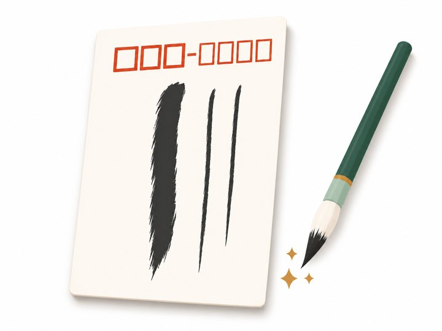

iPhone・iPad・Android の宛名印刷アプリ
はがきも封筒も、
縦書きの宛名をきれいに。
住所録を1つ持って、はがきや封筒を先に選び、実寸の下見のとおりに印刷します。郵便番号を入れると住所が出て、郵便番号の枠には 0.5mm ずつ合わせられます。広告も登録も通信もありません。
App Store・Google Play で配信予定買い切りで全部の機能が使えます。アプリ内課金・サブスクリプション・広告はありません。

こんな困りごとのために
広告で印刷までたどり着けない
ふみばこに広告はありません。宛名を選んで、そのまま印刷や PDF にできます。
はがきの大きさを選べない
はがき・往復はがき・長形3号・長形4号・角形2号・洋形2号を先に選びます。下見はその用紙の実寸の形で、印刷も同じ大きさです。
郵便番号がずれる
枠の位置は日本郵便のマニュアルの寸法から始めて、用紙ごとに 0.5mm ずつ合わせられます。普通紙の試し刷りに、はがきを重ねて確かめられます。
住所録が消えた
毎日の控えを iCloud Drive に置きます（30日・どの日にも戻せます）。控えのファイルと CSV の書き出し、ゴミ箱もあります。
連名のバランスが悪い
連名は3人まで。名字は1つで、名前の下をそろえます。名前と住所の長さから文字の大きさを決め、はみ出しません。
住所を打つのが大変
郵便番号を入れると住所が出ます。日本郵便の郵便番号データを端末の中に持っているので、通信しません。連絡先や CSV からも入れられます。
できること
| 用紙 | はがき・往復はがき・長形3号・長形4号・角形2号・洋形2号 |
|---|---|
| 宛名 | 縦書き（洋形は横書きも）・番地の漢数字・連名3人・会社名と部署・敬称（様・御中・先生・殿・なし） |
| 郵便番号 | 郵便番号から住所（端末の中の日本郵便のデータ）・枠の位置を用紙ごとに 0.5mm ずつ・試し刷り |
| 住所録 | グループ・検索・今年の印（出した・届いた・喪中）・連絡先と CSV から・差出人を複数 |
| 印刷 | AirPrint のプリンターに用紙の大きさを渡して印刷・選んだ人の分を1つの PDF に |
| データ | 登録・通信なし・iCloud Drive に毎日の控え 30日・控えのファイルと CSV の書き出し・ゴミ箱 |
郵便番号のデータは、日本郵便が公開している郵便番号データ（日本郵便は郵便番号データの著作権を主張していません）をもとにしています。使い方・プライバシーポリシー・利用規約もご覧ください。